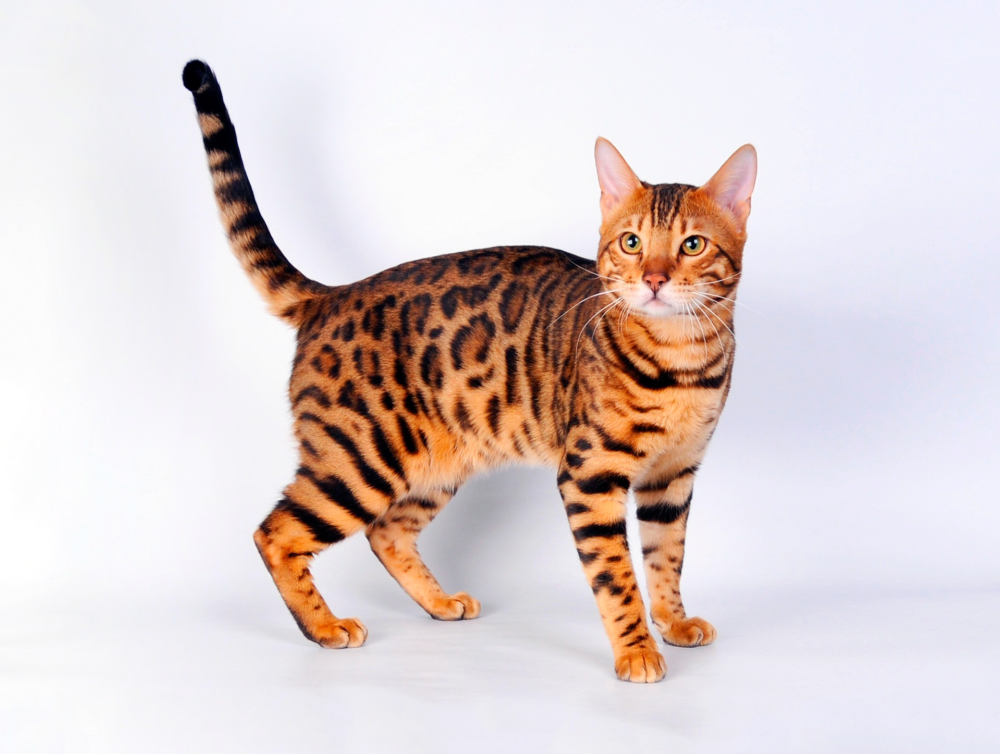

Описание:
Мама и папа передали Снежку неиссякаемую энергию и такую же нежность.
Он всегда в настроении для игр и маленьких проказ.
Повзрослев, он стал серьезнее, но не настолько, чтобы спать сутками напролет.
Нет, Снежку всегда нужно быть в курсе всего происходящего в доме, поэтому,
что бы вы не делали, кошка всегда рядом, комментируя и оставляя свои отзывы
о происходящем. К слову, характер у кошек этой породы очень любознательный,
поэтому бурмиллы чаще других попадают в «истории».

Описание:
Имеет весьма ласковый и дружелюбный характер.
Очень игрив и привязывается к своим хозяевам очень сильно.
Бегемот может быстро научиться открывать двери в доме,
может часами смотреть телевизор.
У ниго отлично развит охотничий инстинкт.
Очень не любит, когда его оставляют в одиночестве.
Самое любимое место – колени хозяина.

Описание:
Отличается завидным миролюбием.
Ему никогда не придет в голову смахнуть могучей лапой вазу с тюльпанами со стола.
Он аккуратен и осознанно делит все предметы в доме на свои и чужие.
Живоглот ненавидит узкие ограниченные пространства,
поэтому предпочитает не лазить на шкафы,
антресоли, полки и прочие любимые места типичных кошек.
Описание:
Котята длинношерстной британки довольно активны и ведут себя,
как и все остальные – любят погоняться за мячиком, запрыгнуть на шторы,
проявляют огромный интерес к окружающей обстановке.
Взрослая кошка – воплощение спокойствия и стойкости.
Ее довольно трудно испугать и вызвать на эмоции, но бывают случаи,
когда животное может обидеться и спрятаться в укромное место.
Быстро находит общий язык с другими животными и легко
адаптируется к новому месту жительства.

Описание:
Матроскин умный, игривый, активный и любознательный кот.
Для него обязательно стоит купить специальные игрушки, иначе он использует в качестве
игрушки все, что ему понравится. Также он очень ценит свободу,
он просто обожают гонять на открытом пространстве,
а особенно ловить мышей при возможности.
Поэтому с ним стоит почаще играть в активные игры, которые имитируют охоту.

Описание:
Если вы ищете кошку, которая целыми днями валялась бы на диване, подоконнике
или в домике для кошки, то порода Ушастик не для вас.
Конечно, он очень дружелюбен, но имеет яркую черту – игривость,
которая не проходит с возрастом.
Он любит бегать, играться, прыгать и, конечно, есть.

Описание:
Характер у этого хвостатого мурлыки покладистый.
В детстве он был активным, но с возрастом предпочитает спокойный образ жизни.
Хорошо развит охотничий инстинкт - с удовольствием охотится на движущиеся предметы,
иногда это могут быть ноги хозяев.
Не отличаются болтливостью, без надобности они не мяукают.
Хорошо переносит одиночество.

Описание:
Попадая на руки хозяину, Леопольд расслабляется и обмякает,
словно растворяясь в объятиях. Он способен принимать и удерживать любые
немыслимые позы. Но в этой сверхрасслабленности кроется угроза: падая,
животное может не приземлиться на лапы, что чревато травмами.
Ему необходимо постоянное общение. На руках хозяина он забывает обо всем, потому
что любит его больше жизни. Никогда не будет капризничать, отстаивать
свою территорию или мстить – не в его характере.

Описание:
Довольно активны и ведут себя,
как и все остальные – любят погоняться за мячиком, запрыгнуть на шторы,
проявляют огромный интерес к окружающей обстановке.

Описание:
Том идеальный вариант, если вы хотите нежного и общительного кота,
которая любит быть рядом, но не на коленях. Если вы проводите весь день
на работе, он так же является хорошим выбором.